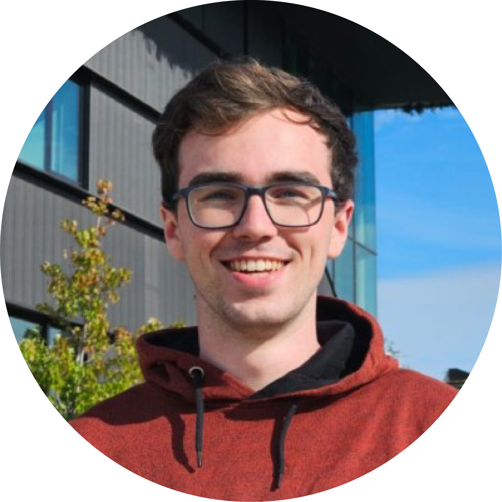

Over Mij
Extra 5: Persoonlijke Reflectie en Toekomstplannen
Mijn naam is Ruben Kaptein en ik ben een 22-jarige derdejaarsstudent aan Aeres Hogeschool. Ik volg de opleiding Geo-informatica en Media, waar ik me bezighoud met de combinatie van geografische informatie en digitale media.
Het vak Geodesign heeft voor mij een belangrijk moment in mijn studie gemarkeerd. Het bracht verschillende aspecten van mijn opleiding samen: geografische kennis, webontwikkeling, en design. Dit heeft me geholpen om beter te begrijpen hoe deze disciplines kunnen samenwerken.
Wat me het meest heeft geboeid in dit vak is de realisatie dat kaarten meer zijn dan alleen technische visualisaties. Ze zijn communicatiemiddelen die verhalen vertellen en mensen betrekken. Dit inzicht zal mijn toekomstige werk sterk beïnvloeden.
In de toekomst wil ik me verder specialiseren in het maken van interactieve kaarten en geografische visualisaties. Ik ben geïnteresseerd in hoe technologie kan worden gebruikt om complexe geografische informatie toegankelijk en begrijpelijk te maken voor een breed publiek.
Ik ben dankbaar voor alle lessen en ervaringen die ik heb opgedaan, en ik kijk uit naar wat de toekomst me zal brengen in het veld van Geodesign en geografische informatica.
